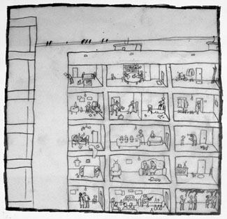
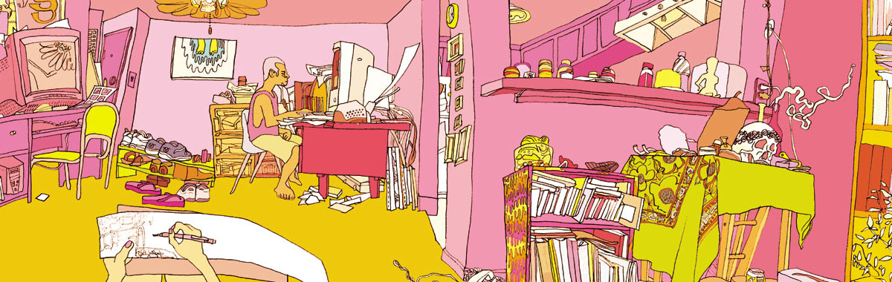
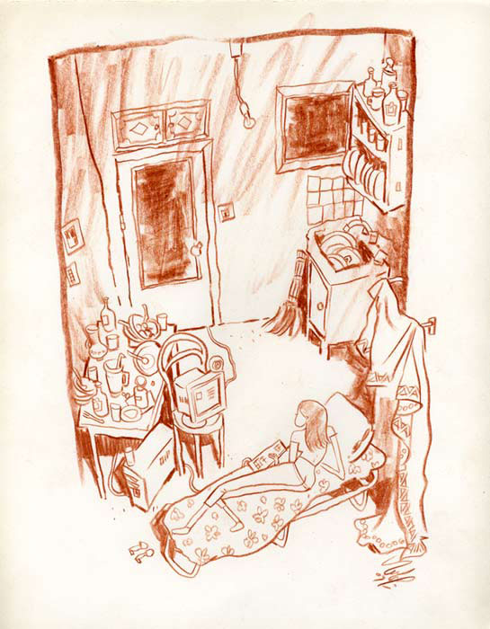
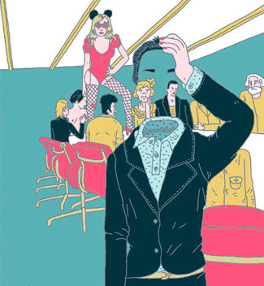
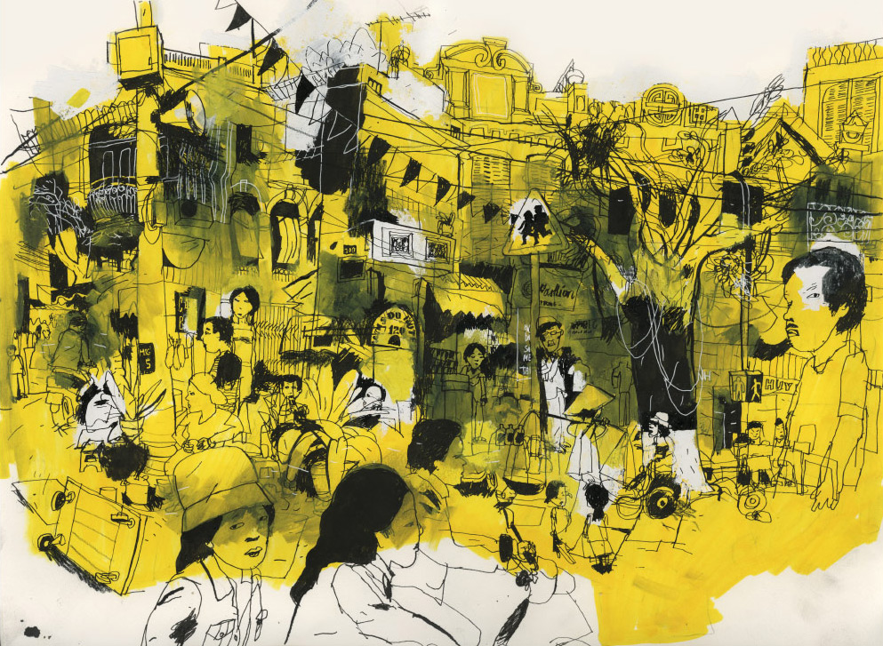

КАК УСТРОЕН МИР?
Детская болезнь солипсизма в иллюстрации
Как устроен мир? Я, например, понятия не имею. Я не знаю принципа связи, и я не знаю, кто клал кабель — разве иногда замечаю оставленные следы и мусор. Пейзаж для меня — загадочнейший из жанров.
Что внутри фонарных столбов? За спиной у торговых ларьков? Кто живет за вот этими окнами, которые всего на пару ладоней выглядывают из-под земли?
Однажды, еще в школе, срезав по дороге домой угол, я вдруг вычислил по отдыхающему грузчику задворки до тошноты знакомого продуктового — и целый месяц после этого с трудом сдерживался, чтобы не рассказать об открытии одноклассникам. В другой раз мне по случайности (несвежий алкоголь) довелось побывать за белой дверцей в конце тоннеля метро, той, где красная молния — это, я вам скажу, посильнее той истории с нарисованным очагом.

Примерно весь остальной мир мне представляется гигантской, богато, с фактурками, раскрашенной потемкинской деревней. Я срезаю новые углы при каждой возможности — и нередко теряю лишний час возвращаясь на проторенную дорогу. Я разбиваю нос о фонарные столбы и о прохожих, потому что гляжу по сторонам. И все равно устройство мира от меня ускользает.
Я думаю, этим страдает каждый второй художник. В конечном счете мы все в той или иной степени солипсисты — и только единицам удается заглянуть за торец ближайшего дома.
Уж как мы все засматривались на эту комнату лет пять назад - и кажется, только Маша Екимова нарисовала в том же духе розетку.

Мы, в общем, следуем принципу малой крови — и это не худший принцип, учитывая наши темпы и то, как напряженно иллюстрация, которая ассоциируется с сайтом kak.ru, противопоставляет себя той иллюстрации, которая ассоциируется с сайтом, например, drawing.wetpaint.ru.
В лучшем случае от фона мы отмахиваемся. Нам достаточно самого условного «где-то».
Чаще всего хватает пары картонных домиков, обозначения окна и угла (и хоть бы один плинтус). На стенах потемкинских деревень не найти магических заклинаний навроде «ПК 18», граница между тротуаром и стеной проведена по линейке, за окнами — еще один слой картона. Если и попадаются таблички с названиями улиц, то чистенькие, как новенькая пластмассовая игрушка. Впрочем, бывает, что кое-где обнажится кладка, признаки старения — это да, это мы любим.

Из всех находок мировой архитектуры популярнее всего у местных иллюстраторов самая скучная — блочное строительство. Сплошная Октябрьская площадь (кто не был, жутчайшее место на свете). И не говорите мне, что это оттого, что вокруг только оно одно. Никогда не поверю, что лишняя щепотка скуки может пойти на пользу иллюстрации — даже если задача, например, передать унылую атмосферу пасмурного дня.
Как-то так получилось, что примеры подобрались все больше про интерьер - но разницы принципиальной нет. Начните со своей комнаты, если лень выйти за дверь.

Фон, третий план — ничем не менее важен, чем первый или второй. Last but not least. Фон — это фундамент. Теплая подстежка. Ритм-секция, если хотите. Вдумайтесь, насколько богаче он делает иллюстрацию. Иллюстрация ведь самостоятельно живет в памяти, и много дольше иллюстрируемого текста. Зрительная память сильнее и надежнее словесной — собственно, любой текст мы запоминаем не набором черных на белом крючков, но образами, которые воображение достраивает по ходу дела. И строим мы ее не с пола вверх, а от деталей наружу.
Зритель покидает иллюстрацию, запомнив, как побывал в другом, пусть крохотном мирке, которому пусть один раз, но стоило посуществовать — или не запомнив.
Ни формализм, ни гротеск, ни в конце концов принципиальное неумение рисовать не мешают создать внутри иллюстрации достоверный мир — часто ведь достаточно двух-трех выразительных деталей — лучше тратить силы на них, чем подсыпать зрителю в глаза квадратных окошек на квадратном доме.
Сходите на улицу. Не на улицу так хоть на фликр, не знаю. Совершите путешествие. Наша работа — показывать людям мир.
